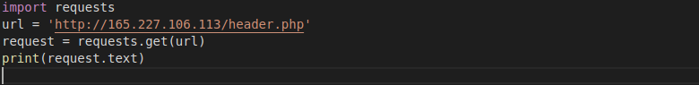
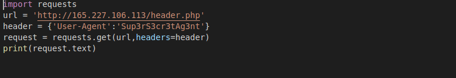

Try to bypass my security measure on this site! http://165.227.106.113/header.php
As the question gives us a link first thing everybody does is
to check that link we can do this by either
using web browser or by using a script.You can use any language that support http request for script but We are
going to use python.

Now after getting response "It seems your user agent is not correct" we get our user agent has to be different
for server to send something interesting
but what? So I look for another clue and i found a commeted keyword "Sup3rS3cr3tAg3nt" in response.
So I tried using this keyword as user agent and guess what i found.

Another problem 'Sorry, it seems as if you did not just come from the site, "awesomesauce.com"''.
So now our request should came from awesomesauce.com for that we use referer in header as awesomesause.com